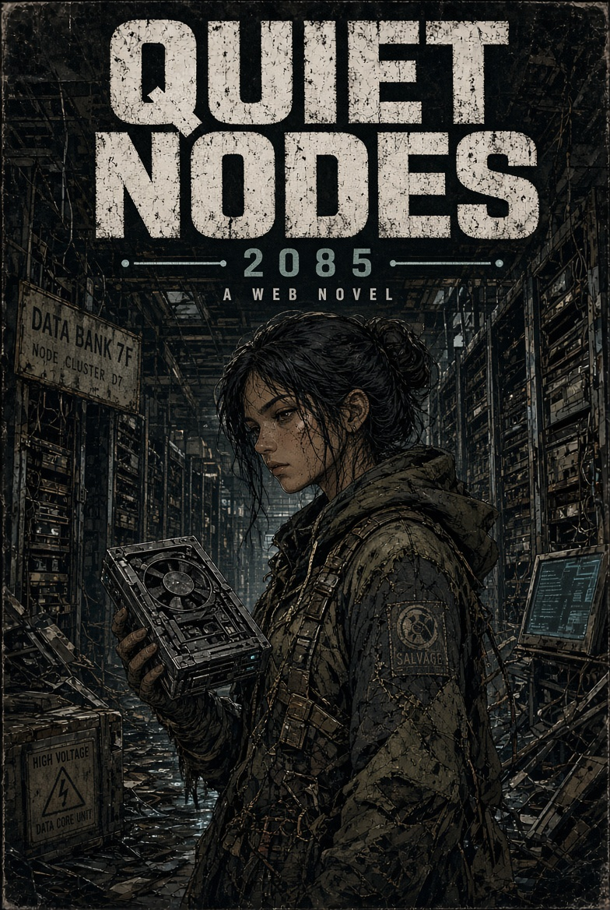
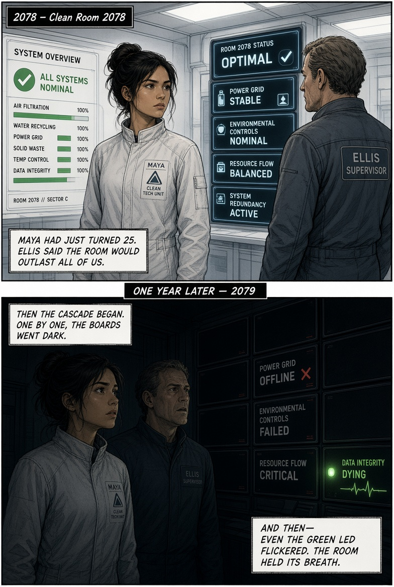
It did not arrive as one explosion. It arrived as a sequence the systems were built to survive, until they weren’t.
First the coastal reactors and long-haul lines failed under the storms. Then coordinated strikes used the orbital debris field as cover to blind the optical relays and hit the ground stations with pulse weapons. The servers themselves stayed intact. The switching fabric did not. For three weeks the fragments still routed around the holes. Then the last diesel stores ran dry, the last battery strings went flat, and the quiet settled in.
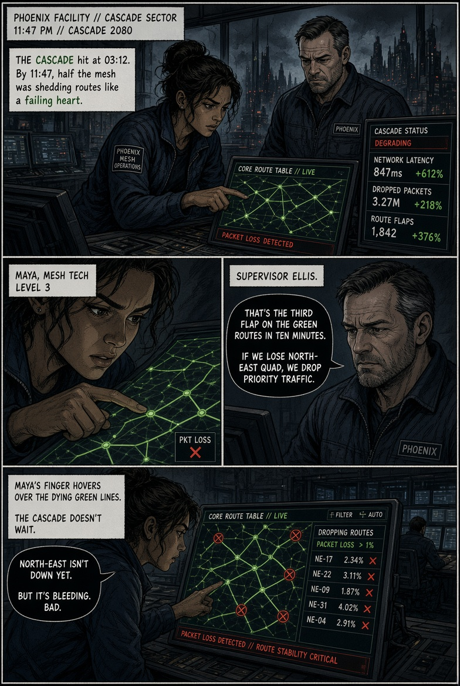
She was a systems technician in the Phoenix facility’s clean-room operations group. On the night the boards started going dark, her job was to confirm which links were still live and which ones only looked live.
What she found was that several of the “healthy” routes were already poisoned. The pulse strikes had left a subset of them reporting green while silently dropping or corrupting traffic. She logged the discrepancy, flagged it for Ellis, and tried to force a manual reroute. It held for eleven minutes. Then the power ended.
She did not cause the Cascade. She was one of the last people who still had a clear view of how it was being finished, and she could not stop it.
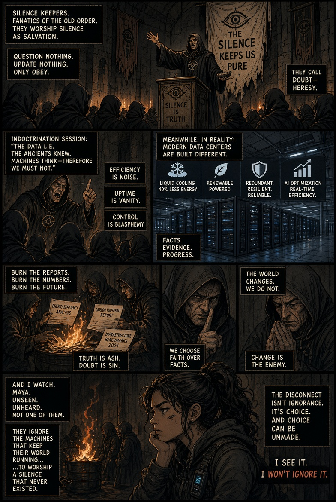
They began as the people who had spent years arguing that the data centers should never have been built. Local coalitions, researchers, and direct-action groups who published cooling numbers, blocked permits, and said the cloud was a liability the public would one day be forced to pay for.
By the mid-2070s the material objections no longer described the facilities actually being built. Later designs closed the loop: dry and hybrid cooling, on-site generation, heat recapture. A minority of the original researchers said so. Most of the remaining infrastructure did not update.
After the Cascade the faction that became the Silence Keepers stopped engaging the distinction entirely. For them the centers were not a generation of machines with measurable inputs; they were a permanent category of harm. Evidence that later plants had already solved the water and power problems was treated as propaganda. The doctrine hardened into something closer to liturgy.
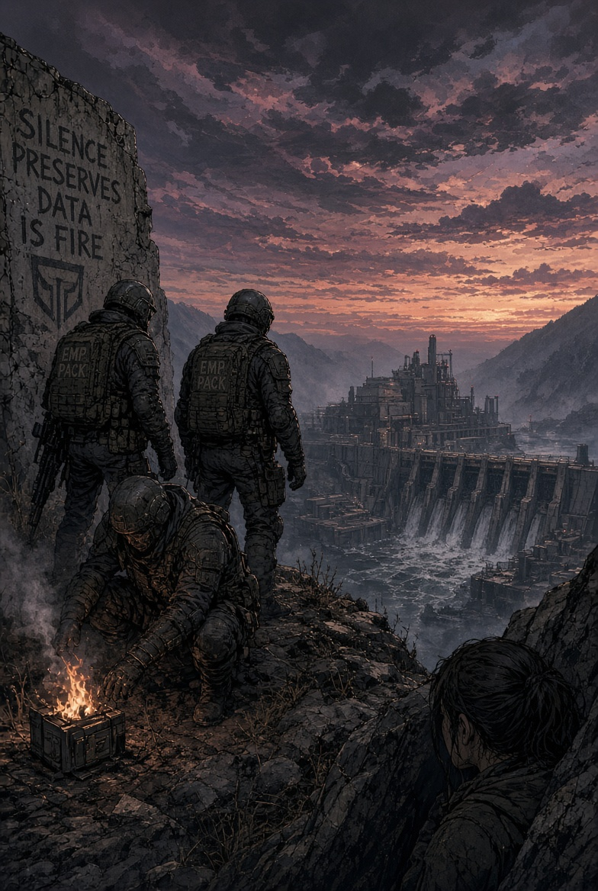
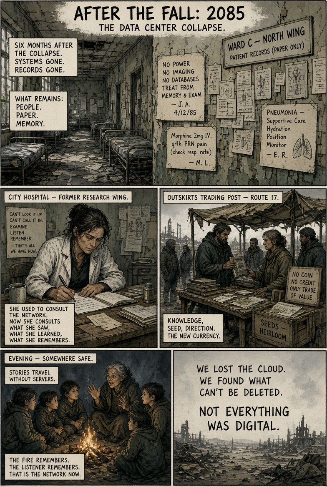
Medical care runs on memory and handwritten charts. Logistics hubs sit empty. Farmers plant by old experience. Children learn navigation from compasses and surviving paper maps. Stories travel by voice around fires.
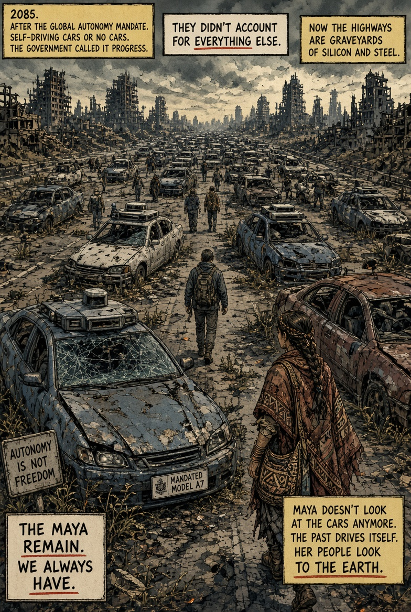
During the early fallout, remaining authorities issued a standing directive: all government-mandated autonomous vehicle systems were to fail safe and stay failed. The networks they depended on were already dead. Highways filled with stopped vehicles whose doors unlocked once and whose navigation stacks went dark.
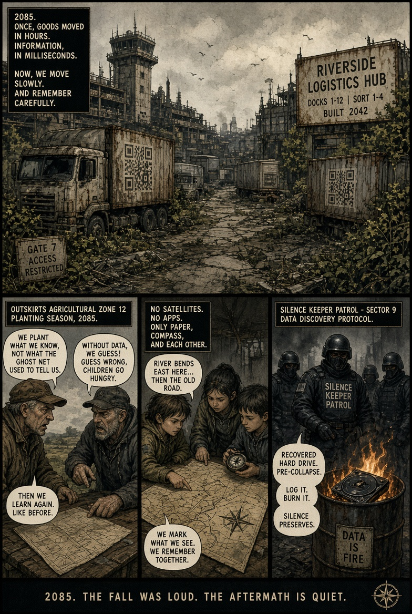
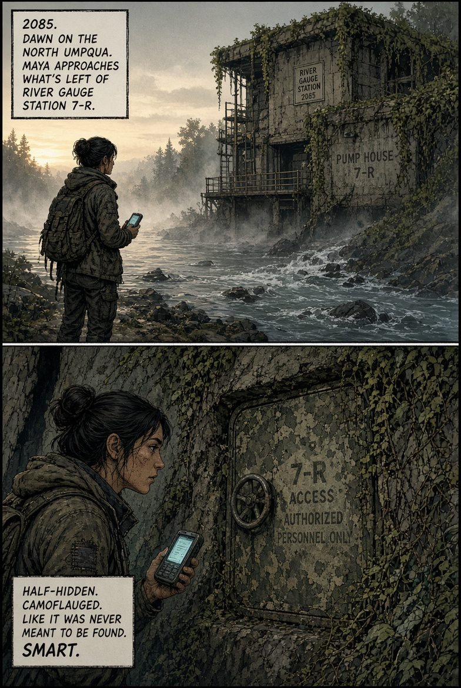
The second node is not in the plant. It is buried in an old river-gauge station and abandoned pump house half a kilometer downstream, deliberately placed where the water and the rock both hide the signature.
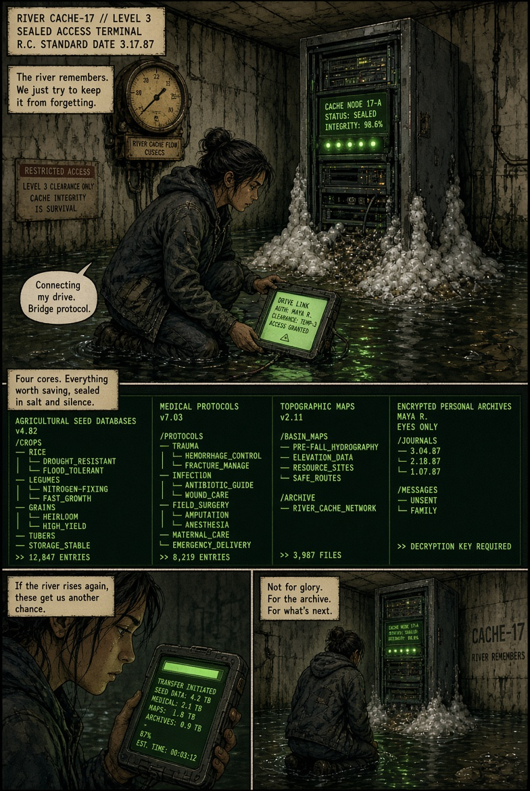
Inside she finds four protected cores: drought- and flood-tolerant seed databases, field medical protocols, regional topographic maps, and a schematic of other River Cache sites. Someone in the final years before the Quiet Collapse spent time and risk placing these so that later people would have more than scavenged hardware and memory.
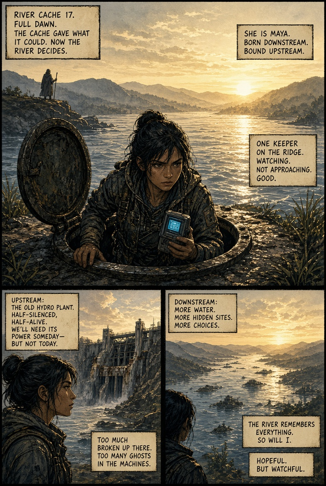
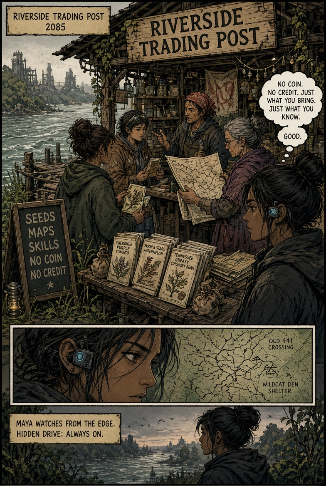
Coin, credit, and digital balances died with the data centers. What remains is a hand-to-hand economy of things that can be verified, carried, and used. Heirloom seed. Verified paper maps. Medical knowledge. Working tools. A single packet of proven rice or bean seed can buy days of labor. A clean topographic map of the river system is worth more than any old coin.
Maya’s drive and the copies she pulled from River Cache are not currency in the open markets—they are too dangerous to flash—but the seed data and regional maps inside them are the kind of value settlements will quietly trade for.
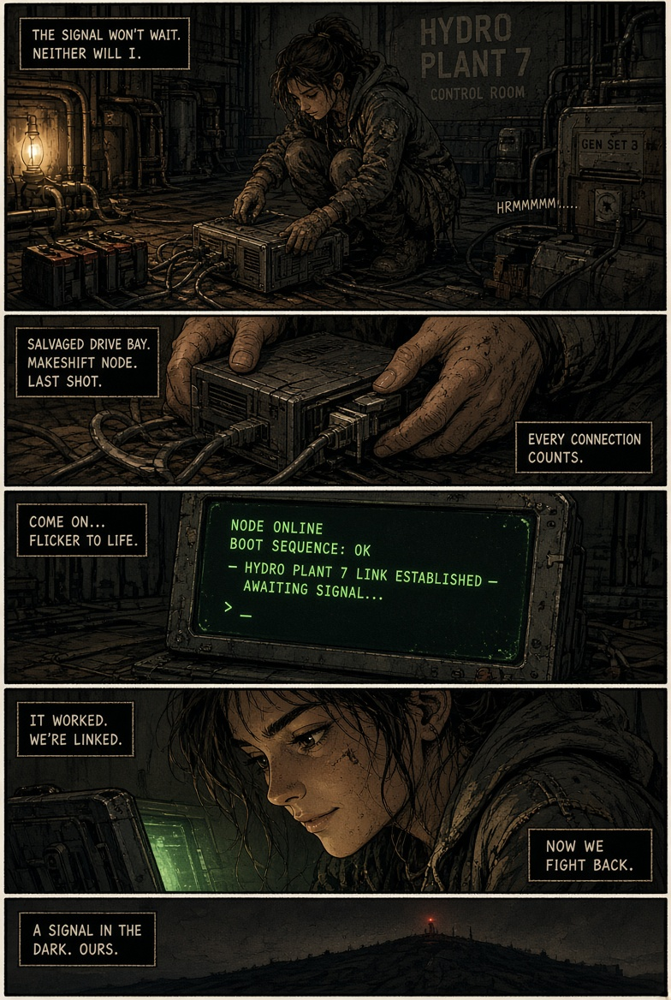
Maya’s first boot signal is detected within hours. A four-person Keeper team reaches Hydro Plant 7 before dawn. She uses the plant’s still-turning turbines, the old Faraday-caged control room, and the partial node itself to hold them off long enough for a second, harder-to-find node to come online further downstream.
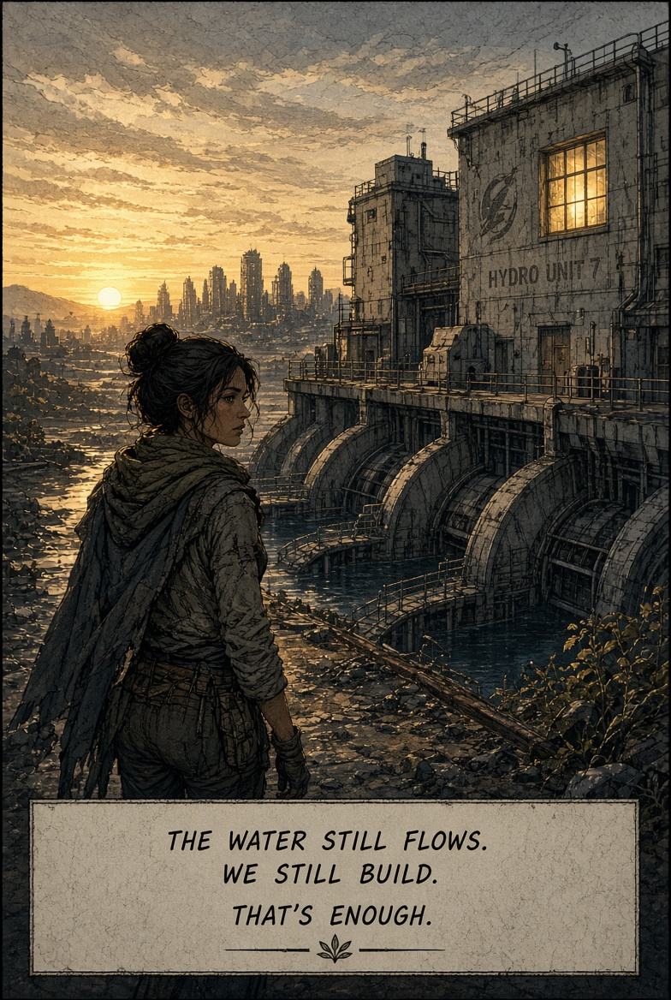
The Keepers take casualties and withdraw. The plant is damaged. Maya is still standing. The water is still turning the turbines. The fight is not over; it has only changed shape.
She carries the memory of the last green light going out and the quiet that followed. That will have to be enough to start with.